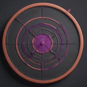
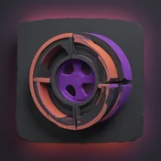

$
aidemo is built for coding agents to autonomously record product demos — for your landing page, your GitHub README, release notes for customers. Any MCP-capable agent — Claude Code, Codex CLI, Gemini CLI — writes one storyboard.json; the headless engine drives a real Chrome, records it, voices it, captions it, and exports a shareable MP4. An open-source alternative to Screen Studio, Clueso, or Demosmith — for when you'd rather your coding agent make the demo.
Real output — aidemo demoing itself on Wikipedia, from one agent-authored storyboard.json. Preview is silent at 2× — scrub to skip around; watch the narrated version ▶
Authoring is slow and happens once. Recording is a fast, deterministic replay — no LLM in the loop during capture, so the video is smooth, not an AI clicking around and waiting between screenshots.
In your repo, with the bundled record-demo skill installed:
$ claude "record a 45s demo of the checkout flow we shipped this week"
One storyboard.json: the script, a per-scene voice & music plan, and a
declarative browser action-spec. It's plain JSON — review it, edit a narration line,
keep it in git.
{ "id": "s2",
"narration": "Search results come back instantly — let's compare the top two.",
"actions": [
{ "op": "type", "target": "#search", "text": "running shoes" },
{ "op": "click", "target": "text=Compare" } ] }
Drives your system Chrome with a smooth animated cursor, narrates each scene with realistic TTS, aligns word-level captions, trims the dead time, auto-zooms on interactions, and muxes a final MP4.
$ aidemo render demos/checkout voice ✓ 6 scenes (cache hit: 4) record ✓ 52.3s raw + timeline.json captions ✓ word-aligned (whisper) compose ✓ trim · sync · zoom · captions · music → output/final-demo.mp4 (45.1s, 1080p)
Edit one narration line → aidemo voice --scene s3 && aidemo compose
regenerates just that scene's audio and the final cut. Bad zoom? Recompose, never
re-record. That's the determinism payoff.

The recording runs a fixed action-spec at full speed. The agent authors the storyboard once; it's never in the loop during capture. Same input, same video.
Your system Chrome, your logged-in profile — localhost, staging, and auth-walled apps all work, no cloud browser. The only network calls are voice and captions, and even those can run locally — an in-process voice model and script-timed captions — for a fully offline, key-free render. Even the MCP server is stdio-only — no network listener. No telemetry.
Screen-Studio-style auto-zoom on clicks and typing, eased smooth-scrolling, sidechain music ducking under narration, PNG-rendered captions that work on any ffmpeg.

Per-scene TTS hash cache and compose-time zoom choreography mean edits are seconds, not another recording session.
Five jobs, one engine. Each starts as a prompt or a one-liner in your repo — the agent authors, the engine renders, you ship the file.
The autoplaying GIF at the top of the readme. Render once, export, commit — no screen-recording session.
$ aidemo render demos/onboarding --headless && aidemo gif demos/onboarding → demos/onboarding/output/final-demo.gif # embed it in README.md
A muted, autoplaying MP4 for the marketing site. The hero video at the top of this page is aidemo output.
$ claude "record a 45s hero demo of the app for the landing page" → demos/hero/output/final-demo.mp4 # <video autoplay muted loop playsinline>
Walk through what's new in the version you're cutting and attach the video to the release notes your customers actually read.
$ claude "record a walkthrough of what's new in v1.4.0" $ gh release upload v1.4.0 demos/whats-new/output/final-demo.mp4
Personalized walkthroughs against your real app. The replay runs in your own logged-in Chrome — localhost, staging, and auth-walled flows all work, and nothing is uploaded anywhere.
$ claude "record the reporting flow on staging, logged in as the Acme sandbox account" → demos/acme-reporting/output/final-demo.mp4 # your Chrome, your profile
The end-of-sprint "what we built this week" clip. One prompt — the agent authors the storyboard and renders in the background while you keep working.
$ claude "demo what we built this week for the sprint review" → demos/sprint-42/output/final-demo.mp4 # rendered while you kept working
The storyboard lives in your repo. A GitHub Action replays it in CI when your product changes — deterministic replay + the in-process voice model means no API key and no LLM tokens, so a re-render costs about nothing. A bad zoom is a recompose, never another screen-recording session.
# re-render on every push that touches the demo, commit the fresh media steps: - uses: actions/checkout@v4 - run: sudo apt-get install -y ffmpeg # ubuntu ships Chrome, not ffmpeg - uses: tandryukha/aidemo@stable # local voice → no keys, no tokens with: { demos: demos/onboarding, tts: local, gif: "true" }
CI publishes to a stable raw URL, so the GIF in your README updates itself on the next
render — the embed markdown never changes. aidemo embed <dir> prints the
snippet.
Mark beats with still and the same storyboard emits named PNGs for docs,
blog posts, and store listings — pulled from the clean take, no caption overlay.
aidemo probe --golden diffs the recorded flow against a committed baseline,
so a moved selector is a failed check — not a stale video nobody noticed.
aidemo's first customers — real products, not staged fixtures: live sites with auth walls, nested iframes, and production checkouts, demoed by a coding agent end to end.
A 75-second shopping flow inside MaxFit's ChatGPT app — an auth-walled
widget in nested iframes, through to a live checkout. Claude Code authored
the storyboard.json; the engine recorded it as a deterministic
replay.
A fitness-gear marketplace running in production. Its walkthrough is the next
demo on this page — the same record-demo skill, pointed at the
live site. The finished video will land here.
aidemo is MCP-first: the engine ships a built-in aidemo mcp server (stdio — no network listener) exposing authoring tools — an engine-served authoring guide, the storyboard JSON Schema, structured validation — and pipeline tools that run as jobs with per-scene progress, log tails, and cancel. One repo-init registers it for Claude Code and Gemini CLI; Codex is one codex mcp add away.
$ npx -y github:tandryukha/aidemo#stable repo-init # one-time: registers the MCP server (.mcp.json) + record-demo skill $ claude "record a 45s demo of our new checkout" storyboard ✓ demos/checkout/storyboard.json — plain JSON, review it, commit it render ✓ voice → record → captions → compose (job: per-scene progress) → demos/checkout/output/final-demo.mp4 (45.1s, 1080p)
$ codex mcp add aidemo -- npx -y github:tandryukha/aidemo#stable mcp # one-time (Codex keeps MCP config globally) $ codex "record a demo of what we shipped this sprint" mcp ✓ get_authoring_guide → validate_storyboard → render (jobId) → job_status → demos/sprint/output/final-demo.mp4
$ npx -y github:tandryukha/aidemo#stable repo-init # one-time: writes .gemini/settings.json (and .mcp.json) $ gemini "record our onboarding flow" mcp ✓ authoring guide → probe selectors → render → poll job_status → demos/onboarding/output/final-demo.mp4
Built on the APIs and tools you already use — each layer is swappable.
Claude Code, Codex CLI, Gemini CLI — via the built-in
aidemo mcp stdio server: an engine-served authoring guide, the storyboard
JSON Schema, structured validation, and pipeline tools that run as jobs with per-scene
progress and cancel. One repo-init registers it; Claude Code also gets the
bundled record-demo skill.
Realistic narration via OpenAI TTS (gpt-4o-mini-tts) by
default; flip AIDEMO_TTS_PROVIDER=elevenlabs for ElevenLabs
voices, or =local for in-process Kokoro-82M — no server,
no key. Any OpenAI-compatible server (speaches, Kokoro-FastAPI) works too — all behind
one swappable VoiceProvider interface.
Word-level timestamps from Whisper keep captions in sync with the
narration — from OpenAI, a local OpenAI-compatible server (LocalAI, speaches), or with
no STT at all via aidemo captions --offline (automatic with local voice).
Exported as SRT/VTT plus styled on-video overlays.
Playwright drives your system Chrome; ffmpeg composes the final cut (trim, auto-zoom, music ducking, mux). All local — no cloud rendering.
A bundled fixture store renders a finished demo with zero external dependencies — under 5 minutes on a clean machine. Prereqs: Node 20+, Google Chrome, ffmpeg, an OpenAI API key — or none at all with the built-in local voice (AIDEMO_TTS_PROVIDER=local).
$ git clone https://github.com/tandryukha/aidemo && cd aidemo $ npm install && cp .env.example .env # add OPENAI_API_KEY $ node examples/local-demo/serve.mjs # terminal 1: fixture on :8787 $ node bin/aidemo.mjs render examples/local-demo --headless $ open examples/local-demo/output/final-demo.mp4
What it produces: quickstart-demo.mp4 ▶
Anywhere your product needs a video: the hero demo on your landing page, a walkthrough GIF/MP4 in your GitHub README, a "here's what shipped" video attached to release notes for customers, onboarding clips for docs. Because the agent authors the storyboard from your repo's context, regenerating the video after a release is a one-line prompt.
Yes. Render the demo, then export it: aidemo render demos/onboarding --headless && aidemo gif demos/onboarding writes an autoplaying final-demo.gif next to the MP4 — commit it and embed it at the top of the readme. Regenerating after a release is re-running those two commands.
Yes. The storyboard is committed to your repo, and the aidemo GitHub Action (uses: tandryukha/aidemo@stable) replays it in CI. The replay is deterministic and the voice model runs in-process, so a re-render needs no API key and no LLM tokens — it costs essentially nothing. CI can commit the fresh MP4/GIF, comment it on the pull request, or publish to a stable embed URL that never changes. One storyboard can also emit named stills and render narration in several languages from a single take.
Yes — with aidemo's bundled record-demo skill, Claude Code fetches the authoring guide from the built-in aidemo MCP server, writes the storyboard.json (script, per-scene voice plan, browser actions), and renders it as an MCP job. The engine does the rest: recording, voiceover, captions, final MP4.
Those tools require a human to record raw footage first. With aidemo, your coding agent authors the demo and a deterministic player records it — no screen-recording session, no cloud upload. And it's MIT-licensed open source.
Yes. aidemo drives your system Chrome locally with your own profile, so localhost, staging environments, and auth-walled apps all work. Nothing leaves your machine except the two narration/caption API calls — and those can run locally too.
Nothing has to. The only two API calls in the pipeline are text-to-speech for the narration and speech-to-text for caption timing. Run TTS in-process with AIDEMO_TTS_PROVIDER=local (Kokoro-82M — no server, no API key; captions derive from the script automatically) and the whole render is offline. Or point OPENAI_BASE_URL at any OpenAI-compatible local server (speaches, Kokoro-FastAPI, LocalAI). With the default config only those two calls go out, to OpenAI with your own key. No telemetry, no analytics: music is synthesized locally, captions and cards are rasterized locally, and the output MP4 never leaves your disk.
Any MCP-capable agent: Claude Code, Codex CLI, and Gemini CLI all work today via the built-in aidemo mcp stdio server. One repo-init registers it — .mcp.json for Claude Code (plus the bundled record-demo skill), .gemini/settings.json for Gemini CLI — and Codex is one codex mcp add line. Any human or agent that can write a storyboard.json and run aidemo render can use it too.
Yes — aidemo mcp runs a stdio MCP server built into the engine (no network listener). It exposes authoring tools — an engine-served authoring guide, the storyboard JSON Schema, structured validation — and pipeline tools that run as jobs: render returns a jobId immediately, job_status reports the stage, per-scene progress, and a log tail, and job_cancel aborts mid-take while keeping the partial footage.
Yes. Set AIDEMO_TTS_PROVIDER=elevenlabs and ELEVENLABS_API_KEY, and your storyboard's voiceId becomes an ElevenLabs voice id. Captions keep using the OpenAI-compatible endpoint, so ElevenLabs narration works alongside local Whisper captions. Leave the variable unset and nothing changes — OpenAI gpt-4o-mini-tts stays the default.
Yes — MIT-licensed open source. With AIDEMO_TTS_PROVIDER=local the whole render is free, key-free, and fully offline (an in-process Kokoro-82M voice, captions derived from the script). Otherwise the only runtime cost is your own OpenAI or ElevenLabs API key for narration and caption timing — or point OPENAI_BASE_URL at any OpenAI-compatible local server (speaches, Kokoro-FastAPI, LocalAI).